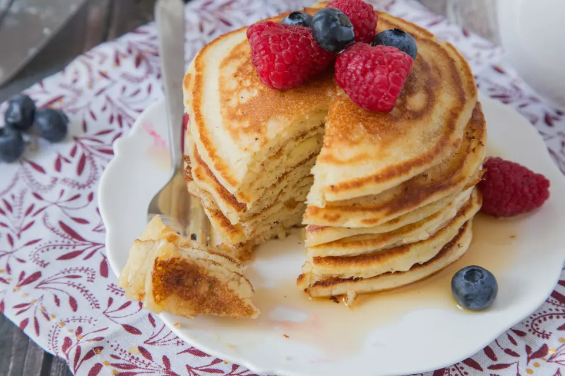

Pancakes

Simple Pancakes
Easy Pancakes made with Bisquick
Ingredients
- Bisquick Mix
- Milk
- Eggs
- Vegetable Oil
- Cinnamon
- Vanilla
Steps
- Preheat griddle to medium-high
- Pour 2 cups of Bisquick mix in mixing bowl
- Add 1 cup of milk
- Add 2 eggs
- Add 2 tbsp of vegetable oil
- Add 1 tsp of cinnamon
- Add 1 tsp of vanilla extract
- Stir until ingredients are combined
- Scoop 1/4 cup of batter onto griddle
- Flip when pancakes bubble and edges dry
Home